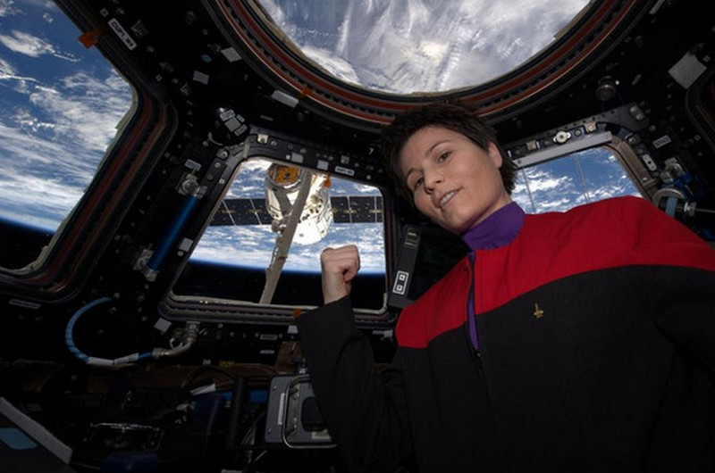
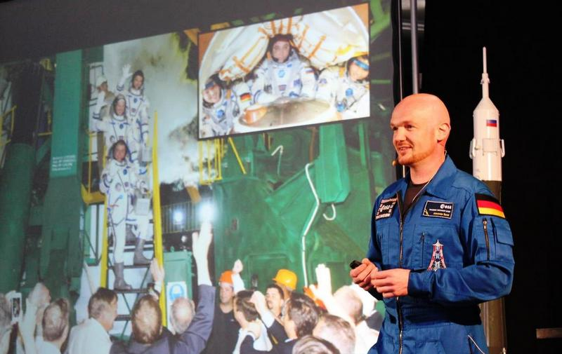
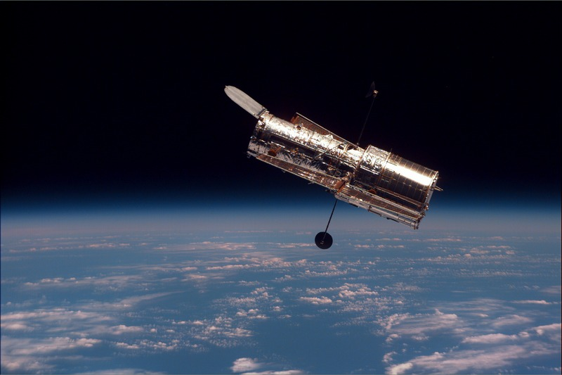
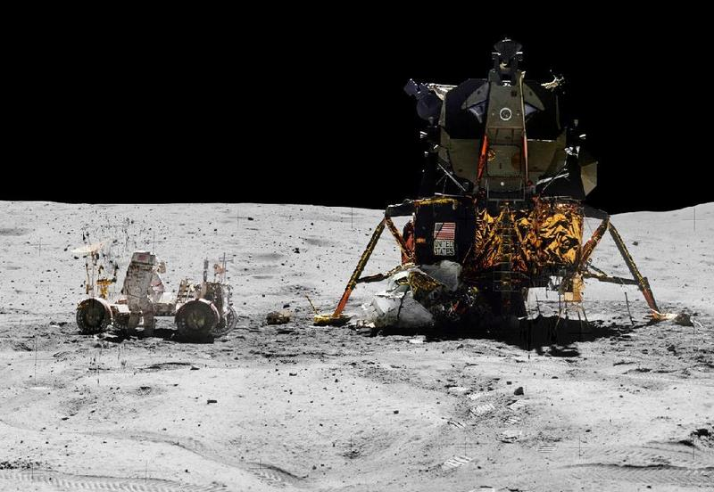
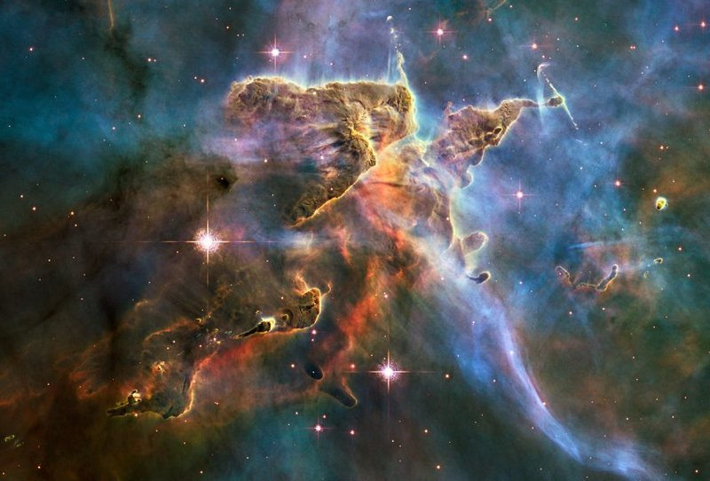

von Reiner Krauss

© ESA
Am 23. November 2014 startete die europäische Astronautin Samantha Cristoforetti zur ISS. Jetzt wurde ein Foto von ihr unter den Star Trek-Fans berühmt. Es zeigt sie in Commander-Uniform in der ISS-Aussichtskuppel Cupola bei der Ankunft der Dragon Versorgungskapsel. Die 37-jährige Italienerin freute sich hierbei besonders auf die Ankunft der raumfahrttauglichen Espressomaschine. Ihre Rückkehr zur Erde ist für den 16. Mai 2015 geplant.
Weiterführende Informationen zum Thema:
https://twitter.com/AstroSamantha Samatha's Twitter News und Bilder

© R. Krauss
Nach rund einem halben Jahr im Erdorbit auf der ISS kehrte Alexander Gerst am 10. November 2014 zur Erde zurück. Von Bord der Internationalen Raumstation suchte er auch nach Köln (Standort der Astronautenausbildung der ESA), doch er fand Speyer mit den altrheinischen Flusswindungen. Nun kam er, am 25. April 2015, zu einem Vortrag mit anschließender Autogrammstunde in das dortige Technikmuseum und in die Hallen der Raumfahrt-Ausstellung »Apollo and Beyond«.
Lesen und sehen sie hierzu auch den Vor-Ort-Beitrag »Astro_Alex, ganz irdisch und nah« unseres Redakteurs Reiner Krauss hier in diesem Corona Magazine.
Weiterführende Informationen zum Thema:
http://speyer.technik-museum.de/ - Technikmuseum Speyer
https://twitter.com/astro_alex - Twitternews von Astro_Alex
Der Komet 67P/Tschurjumow-Gerassimenko nähert sich weiterhin stetig der Sonne. Die umkreisende Raumsonde Rosetta konnte zwischenzeitlich im Zusammenspiel mit dem nunmehr im Ruhemodus befindlichen Lander Philea ermitteln, dass der Komet kein eigenes Magnetfeld besitzt.
Natürlich hofft man weiter auf ein »Erwachen« des Landers Philea voraussichtlich im Mai/Juni, sobald die Sonneneinstrahlung ausreichend ist, um mehr Energie zu erzeugen. Doch schon jetzt hat man bereits mehr Dokumente von der Kometenoberfläche, als bisher der Öffentlichkeit zur Verfügung gestellt wurden: Der Leiter für den Missionsbetrieb (ESA), Paolo Ferri, sagte einem Radiosender: »Die Bilder (von Philae), die wir gesehen haben, sind noch nicht veröffentlicht, aber sie waren fantastisch.«
Weiterführende Informationen zum Thema:
http://client.cntv.at/egu2015/PC1 Briefing Rosetta Mission (Pressekonferenz Mitte April)

© NASA
Am 24. April 1990 wurde das Weltraumteleskop Hubble mit dem Space Shuttle in die Erdumlaufbahn gestartet. Nach später reparierter »Sehschwäche« lieferte es bereits kurze Zeit später Astronomen Einblicke ins Universum in nie gekannter Qualität. Für den interessierten Beobachter gab es farbige Aufnahmen, die das neue Bild vom Weltall prägten. Sie zeigen uns bunte Galaxien, Sterne, Nebel und das Sonnensystem.
Weiterführende Informationen zum Thema:
http://hubblesite.org/gallery/album/ Hubble Fotogalerie
http://hubble25th.org/ Hubble Jubiläums-Sonderseite
SpaceX Falcon 9 / Dragon CRS-6
14. April 2015: Die Rakete schickte im Auftrag der NASA eine Dragon-Nutzlastkapsel zur Internationalen Raumstation (ISS). Mit an Bord war die ISSespresso, die erste raumfahrttaugliche Espressomaschine. Die Landung der Erststufe auf einer Seeplattform gelang zwar zielgenau, jedoch kippte sie um und wurde zerstört.
ESA Ariane-5 ECA VA-222 mit Thor-7 & Sicral-2
26. April 2015: Eine Ariane-5 bringt zwei Telekommunikationssatelliten in den Erdorbit. Sie kreisen nun 2.500 Kilometer über der Erde. Sicral 2 ist ein französisch-italienischer Verteidigungs- und Kommunikationssatellit, Thor 7 dient der Schifffahrt für Radio- und Fernsehempfang.
SpaceX Falcon 9v1.1 mit Turkmenistan NSSC
27. April 2015: Turkmenistan NSSC, gebaut von Thales Alenia Space, ist der erste turkmenische Kommunikationssatellit. Er wurde von einer Falcon 9v1.1 in Cape Canaveral gestartet und in den geostationären Orbit verbracht.
Sojus 2-1A mit Progress M-27M (№ 426)
28. April 2015: Start des Versorgungsflugs 59P zur ISS von Baikonur (Kasachstan). Die Progress geriet jedoch ins Trudeln. 1,5 Sekunden vor dem vorgesehenen Zeitpunkt der Trennung von der dritten Stufe der Rakete kam es zum Verlust der Telemetriedaten. Die Trennung der 3. Stufe und Progress war 528,27 Sekunden nach dem Start, da rotierte das Transportschiff bereits. Progress-M-27M wird von seiner Umlaufbahn absteigen und in der Atmosphäre zwischen dem 05. und 07. Mai verglühen. Da die Sojus auch für bemannte Flüge zur ISS verwendet wird, wurde eine Untersuchungskommission eingesetzt.

© NASA
Apollo 16 startete am 16. April 1972, 17:54 UTC in Cape Canaveral, Florida. Die Crew bestand aus John Young, Ken Mattingly und Charles Duke. Drei Tage nach dem Start fiel das Navigationssystem aus. Die Positionsbestimmung konnte nur mithilfe eines klassischen Sextanten erfolgen. Am 20. April trennte sich das Landemodul Orion vom CM Caspar.
Dabei wurde festgestellt, dass der Schwenkantrieb des Haupttriebwerks teilweise nicht funktionierte. Da die redundanten Systeme jedoch arbeiteten, konnte der Landeanflug fortgesetzt und erfolgreich das Descartes-Hochplateau erreicht werden.
Bei drei Mondspaziergängen, inklusive Mondauto, mit einer Gesamtdauer von 20 Stunden 17 Minuten wurden 26,6 Kilometer zurückgelegt. Neben der Installation wissenschaftlicher Experimente konnten vier Krater besucht und untersucht werden. Dabei fanden die Astronauten statt erwarteter vulkanischen Formationen hauptsächlich durch Einschläge gestaltete Felsen vor, darunter die mit 11 kg größte mitgenommene Probe.
Beim Wiedereintritt in die Erdatmosphäre mussten die Astronauten eine Verzögerung von 7,19 g aushalten, den höchsten gemessenen Wert für eine Apollo-Mission. Am 27. April 1972 um 19:45 Uhr UTC wasserte Apollo 16 im Pazifik und wurde vom Flugzeugträger USS Ticonderoga geborgen.
Weiterführende Informationen zum Thema:
https://youtu.be/tA6Jo4KydyQ - Apollo 16, Nothing So Hidden
Sie suchen mehr zur Raumfahrt und Technik? Finden sie Bücher zur Buran und dem amerikanischen Space Shuttle, oder DVDs und Modelle im Online-Shop des Technikmuseums Speyer - dem Ort an dem, nach weiteren Astronauten, auch Buzz Aldrin und zuletzt Alexander Gerst ihre Aufwartung machten.
Auch ein Besuch des Museums lohnt sich und ein IMAX-Dome Film wie Der blaue Planet bringt ihnen dort den atemberaubenden Blick auf die Erde. Ein 360 Grad Dome-Kino, sie fühlen und sehen wie ein Astronaut.
Weiterführender Link zum Thema:
http://shop.technik-museum.de/buecher.html Online Shop Technik Museum Speyer
http://speyer.technik-museum.de/de/imax-dome/blue-planet IMAX Dome - Der blaue Planet
• Alexander Gerst - ist Geophysiker und Vulkanologe (geb. 3. Mai 1976 in Künzelsau). Er gehört seit 2009 dem ESA-Astronautenkorps an. Er flog am 28. Mai 2014 an Bord eines russischen Sojus-Raumschiffes zur ISS, um dort ein halbes Jahr lang zu arbeiten. Er ist der elfte Deutsche im All und der dritte deutsche Raumfahrer auf der ISS.
Am 13. Januar 2015 erhielt er das Bundesverdienstkreuz 1. Klasse. Weiterhin wurde am 5. März 2015 ein Asteroid nach ihm benannt: (190617) Alexandergerst.
• Cupola - (ital. für Kuppel) ist der kuppelförmige Beobachtungsturm der Internationalen Raumstation (ISS). Es befindet sich am Moduls Tranquility. Seine vielen wabenförmig angeordneten Aussichtsfenster erlauben einen fast freien Blick auf die Erde.
• g-Kräfte - sind Belastungen, die aufgrund starker Änderung von Größe und/oder Richtung der Geschwindigkeit auf einen (menschlichen) Körper einwirken. Dabei entspricht 1 g der Erdanziehung ohne Bewegung. 4 g bedeuten somit ein Vierfaches an Eigengewicht aufgrund von Beschleunigung.
• Hubble Weltraumteleskop - von der NASA und ESA zusammen entwickelt und nach dem Astronomen Edwin Hubble benannt. Es arbeitet vom Infrarotbereich über das sichtbare Licht bis in den Ultraviolettbereich. Nach der Reparaturmission STS-61 zur Korrektur eines Spiegelfehlers fanden anschließend noch weitere Wartungsmissionen statt: (STS-82, STS-103, STS-109 und STS-125).
2018 könnte das geplante James-Webb-Weltraumteleskop die Nachfolge antreten, welches sich derzeit im Bau befindet.

© NASA (NASA images generally are not copyrighted.)